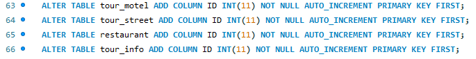
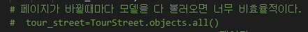
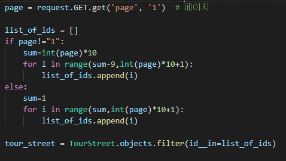

{% extends 'base.html' %}
{% block content %}
- 장고에서 모델을 인식할 때 id라는 컬럼으로 데이터 모델을 인식합니다.
- 따라서 아래와 같이 mysql에 있는 우리의 table들에도 id라는 컬럼을 추가해줬습니다.

- 그리고 원래 저희 사이트의 문제점은 아래의 코드를 보시다시피 페이지를 바꿀 때마다 모든 모델을 불러옵니다.

- 그래서 성능도 느려지고 지도에 모든 가게(모델)들을 표현한다는 문제점이 있었습니다.
- 그래서 이러한 문제점을 보완하고자 코드를 수정했습니다.
- 아래는 수정된 코드이고 간략하게 설명하자면 페이지 당 모델 10개만 불러오는 코드입니다.

- 따라서 이러한 문제 해결들을 통해 저희 웹 사이트는 발전할 수 있었습니다.
{% endblock %}